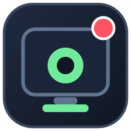

Global hotkeys
Start or stop with F8 and pause or resume with F9 while you're in your game.

Rec-loxA tiny, no-fuss screen recorder made for your Roblox sessions. Jump into a game, hit a function key, and get right back to playing.
Everything you need to capture a session, without a heavy editor or a complicated setup.
Start or stop with F8 and pause or resume with F9 while you're in your game.
Save standard MP4 video locally, ready to trim, share, or upload.
Built in C++ with Windows APIs. No Electron, bundled browser, or external encoder download.
Mouse pointer capture is included so viewers can follow your actions.
Your recordings stay on your PC. Rec-lox does not upload your videos.
Install in a few clicks, then open Rec-lox before starting Roblox.
Hotkeys work globally while Rec-lox is open.
Free, open-source, and built for Windows 10/11.